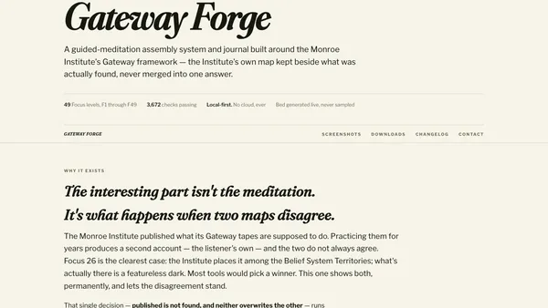
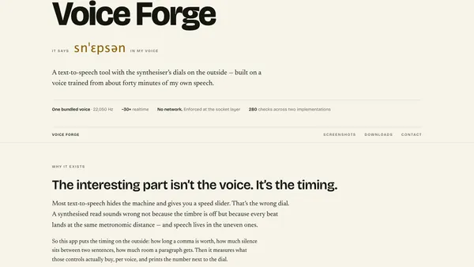
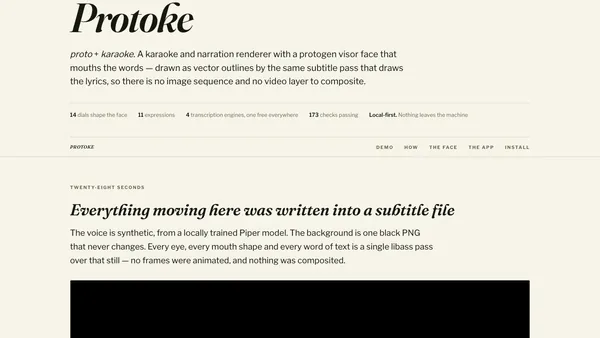
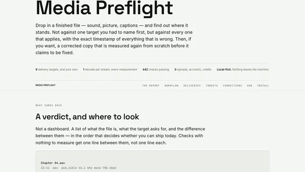
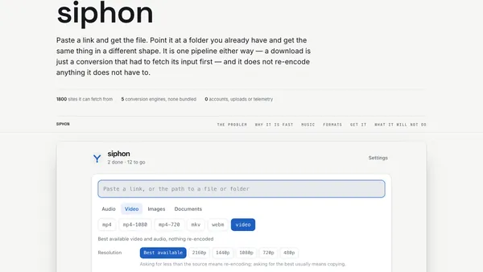
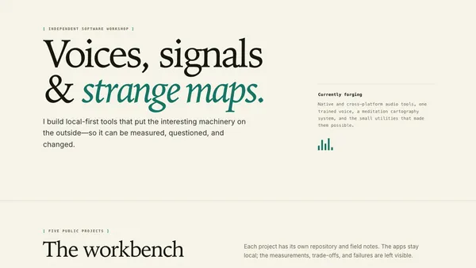

145ms
a comma on the bundled voice
A text-to-speech tool with the synthesiser’s dials on the outside — built on a voice trained from about forty minutes of my own speech.
Why it exists
Most text-to-speech hides the machine and gives you a speed slider. That’s the wrong dial. A synthesised read sounds wrong not because the timbre is off but because every beat lands at the same metronomic distance — and speech lives in the uneven ones.
So this app puts the timing on the outside: how long a comma is worth, how much silence sits between two sentences, how much room a paragraph gets. Then it measures what those controls actually buy, per voice, and prints the number next to the dial.
Measured
Piper has no pause table. A comma reaches the model as a phoneme like any other and the duration predictor decides on the spot. The only honest way to answer is to render a line with the mark and the same line without, and subtract.
Two voices from the same speaker sit three times apart at a comma, and 194 words a minute against 148 on identical copy. Only the first ships here — the second was trained for the meditation app this engine came from, and stayed with it. That gap is the entire reason Measure this voice is a button rather than a printed constant: a figure taken from one voice does not describe another, and the app will not print one under the other.
The app

Left: the script, and what it became — every sentence with its length, pace and peak, playable and re-rollable on its own. Right: the dials, each with the measured consequence printed underneath.


Light and dark, and the cross-platform build beside it. The interface is drawn rather than borrowed from a toolkit, so it is the same on every platform instead of three apps that happen to share a name.
espeak gets most words right unaided — it manages Siobhan without help. What breaks is proper nouns, brand names, acronyms, and the words people simply disagree about. So the dictionary starts from the words in your script rather than an empty box, and it takes IPA, because IPA is exactly what the model consumes. What you type is what it is handed.

Left, what espeak says. Right, what you want instead. The green line is the part that earns its keep: it runs the substitution and reports where it actually landed, because stress shifts in context and an entry that quietly does nothing is the exact failure this feature exists to prevent. Entries are global by default, with per-script overrides that shadow them.
/slashes/ you would paste from a dictionary are refused, and so is a syllable dot — to this model . is the full-stop phoneme, so it would break the sentence in half mid-word. An ASCII r only warns: it is the trilled r of Spanish, real IPA, and somebody might mean it.Three things it does that other tools don’t
Silence between sentences is exact — they are separate calls to the model. A comma is not: it happens inside one call, so the app hands the model more room and measures what that buys, rather than promising milliseconds it cannot deliver.
Global entries with per-script overrides. Every character is checked against the voice’s own 161 symbols, because the phoneme mapper silently drops what it doesn’t know — the slashes you’d paste from a dictionary vanish without a word.
A dry voice sits near −24 LUFS with peaks around −6 dBFS, so a −14 streaming target needs gain the true-peak ceiling won’t allow. The app shows you that before you export, and says the shortfall in dB.
Downloads
One line in a terminal. It asks GitHub for the latest release, takes the single build for that machine, checks its SHA-256 against the checksums published in the same release, and unpacks it. No sudo, and nothing written outside the paths it prints.
curl -fsSL https://raw.githubusercontent.com/snepssen/voice-forge/main/install.sh | shirm https://raw.githubusercontent.com/snepssen/voice-forge/main/install.ps1 | iexBuilt and configured. Nobody has run it yet — if you do, tell me what happened.
| Platform | Build | Status | What was checked |
|---|---|---|---|
| macOS 15, Apple Silicon | Swift / SwiftUI | Verified | Development, all suites, packaged app, real voiceover exported |
| SteamOS 3, Steam Deck | Electron / TypeScript | Verified | Launches, renders, plays, exports — and sounds right, which is the check that matters |
| Windows 10 / 11 | Electron / TypeScript | Untested | Packaging configured, CI written, binary never executed |
Your own voice
One voice ships, and it isn’t privileged: drop a Piper .onnx and its .onnx.json into the voices folder and it appears in the picker. Install one named the same as the bundled voice and yours wins.
The full guide ships inside the app and carries this project’s own measurements rather than generic advice — including the batch-size cliff that cost seventeen times the training speed for one power of two.
How it’s built
The Mac app is Swift and stays Swift. Everywhere else is Electron and TypeScript, with the interface drawn in HTML so it looks the same rather than borrowing a platform toolkit. The engine is Piper/VITS through ONNX Runtime, with espeak-ng for phonemes.
The parity suite is the one that matters. Phonemes are compared byte-for-byte and durations to the millisecond — 1.637 s against 1.637 s, 4.888 s against 4.888 s, with the duration predictor made deterministic so the comparison means something.
The npm phonemizer bundles a newer espeak-ng whose American English rules moved the NORTH/FORCE vowel from ɔːɹ to oːɹ. Across 35 ordinary words, 8 differed — four, before, more, door, important, course, report, support — and the model was trained on the first. Shipping the Mac build’s espeak data with the WebAssembly makes it byte-identical again.
It fails open: point it at the wrong directory and nothing errors. The app runs, speaks, and is wrong in some of the commonest words in English. Eight parity checks own those words for exactly that reason.
No updater, no crash reporter, no analytics. Chromium’s background chatter is switched off by name, and the socket layer refuses any non-loopback connection outright. The check that proves it was itself proved: a deliberately planted request had to make it fail before the passing result was believed.
The wider workshop
Move between guided-meditation authoring, measured speech, lyric video, delivery validation, and the small field tools that support all of them.

Assemble guided sessions and keep published maps beside what was actually found.
Explore Gateway Forge →
A transparent Piper workbench for timing, pronunciation, and honest audio export.
Explore Voice Forge →
Karaoke and narration video with a vector visor face that mouths every word.
Explore Protoke →
Check a finished file against where it is going, and correct it without touching the original.
Explore Media Preflight →
Fetch from a link or convert what you already have, without re-encoding what it does not have to.
Explore siphon →
Small utilities for audio inspection, corpus work, authoring, and repeatable checks.
Open the toolbox →Get in touch
There’s no updater and no crash reporter, which is deliberate — and it means a failure has no way of reaching me on its own. The app has a Help sheet that copies its version, platform and voices to the clipboard for you to read before you send it. Your script and your dictionary are never in it.